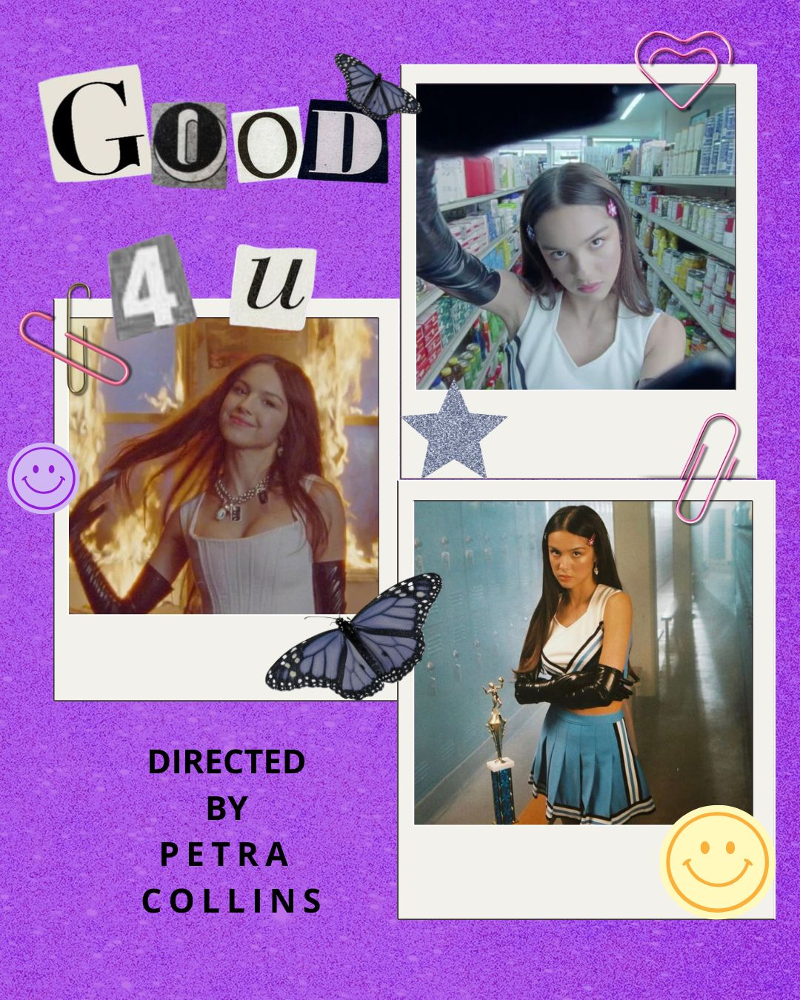

Good 4 U
En el video de “Good 4 U” de Olivia Rodrigo, se muestra una visión de Petra más juvenil, divertida e inmadura. Toma como referencia un clásico cinematográfico como lo es “Jennifer's Body”, creando una atmosfera de los 2000'.
Ver videoclip →